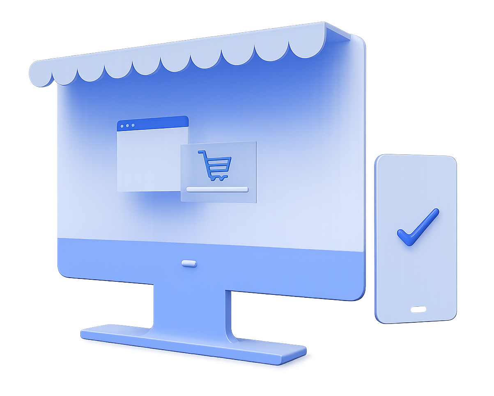

Personal portfolio
Available for freelance projectsThoughtful websites.
Made to connect.
I'm Charles, a frontend developer focused on personal portfolios, landing pages, and business websites with clearer structure, stronger visual rhythm, and responsive polish.
How I approach design
I usually design for clarity first, then personality, then polish so the final site feels premium without feeling crowded.
A quick look at me
Modern portfolio presentation with a warmer, more personal feel.

Featured project
Tessy Royal
A business website shaped to feel trustworthy, warm, and easy to move through.
Explore the project pageCore strengths
- Clear message hierarchy
- Responsive section flow
- Polished frontend finish
Selected work
Selected work. Built with purpose.
I like showing a small group of projects here so the work feels curated, not crowded. Each build reflects a different audience, mood, and browsing style.
Browse the full project collectionFeatured case study
Business website
Tessy Royal was built to feel trustworthy from the very first screen.
This project leads the page because it shows the kind of calmer structure, stronger hierarchy, and trust-led presentation I enjoy bringing into business-focused websites.

Cleaner product presentation with a more modern shopping feel.
Focused on product discovery, cleaner card spacing, and a calmer path to action.
View project details
Poster-led browsing with stronger structure for content-heavy screens.
Built around visual browsing, clearer grouping, and faster scanning across sections.
See more workWhat I build
Three website types I enjoy shaping the most
My best work usually lives where structure, clarity, and personality need to work together instead of competing with each other.
Portfolio websites
Personal websites that feel more considered from the first screen.
Great for freelancers, creators, and personal brands that need a clearer story and stronger project framing.
Landing pages
Focused pages that explain value fast without feeling plain.
Built for launches, campaigns, and products that need sharper hierarchy and cleaner calls to action.
Business websites
Professional brand sites designed to feel calm, polished, and easy to trust.
Best for businesses that want a cleaner online presence with stronger credibility and smoother browsing flow.
How I work
A simple process that helps each website feel clear before it feels complex.
I like reducing noise early. Once the message and layout feel right, I use spacing, motion, and detail to make the experience feel more finished.
Message first
Visual hierarchy
Responsive polish
Clarify the message
Define what the site should say, who it should attract, and what should feel obvious first.
Shape the layout
Build a browsing rhythm that keeps sections easier to scan and key actions easier to notice.
Polish the experience
Add the spacing, interaction, and responsive refinement that makes the whole site feel current.